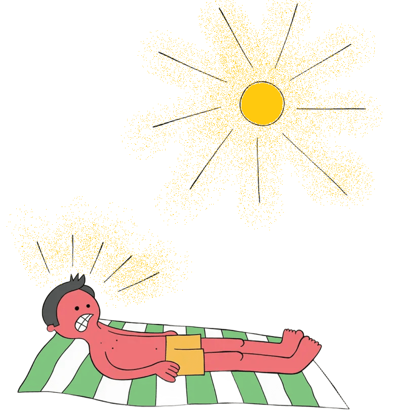

Unidad Educativa “Santa Dorotea”
➤ Transferencia de Calor
Ejemplos
Conducción
Ejemplo 1
Al cocinar, el mango metálico de un sartén se calienta porque el calor de la base se transfiere a través del metal.
Ejemplo 2
Al sostener una taza con café caliente, el calor se transfiere del líquido a tus manos a través del material de la taza.
Ejemplo 3
Al planchar, la ropa se calienta porque el metal de la plancha transfiere el calor directamente al tejido.
Convicción
Ejemplo 1
La calefacción de la casa funciona porque el aire caliente sube desde un radiador, mientras que el aire frío desciende, formando una corriente de aire que calienta la habitación.
Ejemplo 2
En la brisa marina durante el día, el aire caliente sobre la tierra sube, mientras el aire frío del mar se mueve hacia la costa para reemplazarlo.
Ejemplo 3
En el refrigerador el aire frío desciende y el aire más caliente sube, ayudando a mantener la temperatura uniforme en su interior.
Radiación
Ejemplo 1
El calor que sientes en la piel bajo el sol se transmite en forma de radiación térmica.

Ejemplo 2
Las lámparas infrarrojas en un baño calientan tu piel sin necesidad de calentar el aire primero.
Ejemplo 3
En un horno eléctrico los alimentos se cocinan porque las resistencias del horno emiten calor por radiación hacia la comida.